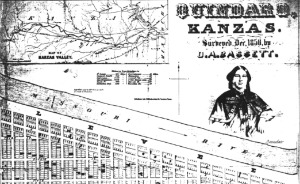

This is an archived copy of History Matters, provided by the Roy Rosenzweig Center for History and New Media. To explore this content in a new interface, visit Who Built America?.

Wyandot Nation of Kansas
http://www.wyandot.org/
Created by the Wyandot Nation of Kansas. Maintained by Powersource.com.
Reviewed Dec. 15, 2010.
In 1649 the Wendat/Wyandot/Huron Confederacy was “destroyed” by their enemies the Iroquois — or so the story goes. Certainly, in textbooks and general histories of native North America this is the dominant narrative. Yet a quick Google search for “Wendat Confederacy” reveals several Web sites that attest to the Wendat people’s survival of their seventeenth-century dispersal, highlighting contemporary Wendat nations in Canada and the United States.
One of these nations is the Wyandot nation of Kansas (WNK), composed of “absentee” or “citizen class” Wyandot (Wendat) Indians. They were incorporated in 1959 and are currently petitioning the U.S. Department of the Interior Bureau of Indian Affairs for federal recognition. Their official mandate is “dedicated to the preservation of Wyandot history and culture and the preservation, protection, restoration and maintenance of the Huron Indian Cemetery in Kansas City, Kansas.” One way that the WNK has tried to achieve those goals is through their development of a Web site.

Launched in 1995, this comprehensive site reflects the long and complex history of the Wendat people. According to the current WNK chief, Janith English, the idea was to create an easily accessible and freely available place for scholarly information about the history and culture of the Wyandot/Wendat people. To that end, the home page is organized around ten major links or headings: History of the Wyandot, Wyandot Sacred Sites, Wyandot Treaties, Wyandot Lifestyle, Language and Literature, Our Wyandot Ancestors, Missions to the Wyandot, Miscellaneous, Genealogy, and What’s New. A simple click will take readers to general summaries of each topic as well as additional links to secondary and primary sources that have been posted by the WNK with permission of the authors or organizations that have authority over the documents.
The quality and breadth of sources are wide ranging. Secondary sources include published and unpublished articles as well as chapters and essays by historians, linguists, anthropologists, and archaeologists. Complementing those pieces are primary documents that include transcriptions of treaties, newspaper clippings, missionary letters, firsthand accounts of meetings, personal letters, and official government correspondence, as well as a speech by the prominent Wyandot headman, Tarhé.
Information is relatively balanced and objective, although the effect of colonialism and the Wyandots' continuing battle against cultural erosion and for identity preservation are evident in a number of the documents. A “nauseating recipe” for whiskey used by traders to weaken Wyandots during treaty negotiations is included, for instance, as is a contemporary poem by Richard Zane Smith about the struggle between Wyandot and missionary notions of Christianity.
Although each document delivers important information on the Wyandots, the full citation for each source is difficult to ascertain because of a lack of clear bibliographic information. That said, the WNK states clearly at the bottom of their home page that, “Each information provider has given written permission to use their material.”
The information on this site is helpful for both professional and amateur historians as well as teachers and professors who are seeking easily accessible materials on Wendat history. In addition, the site serves as a valuable medium for research on the larger topics of colonization, Indian removal, the 1990 Native American Graves Protection and Repatriation Act, as well as Native American self-determination and sovereignty.
Nicole St-Onge
University of Ottawa
Ottawa, Canada
Kathryn Magee Labelle
Ohio State University
Columbus, Ohio